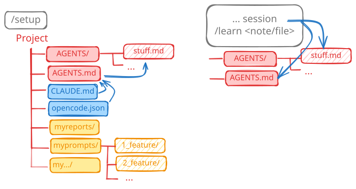
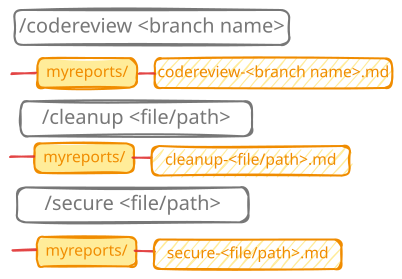
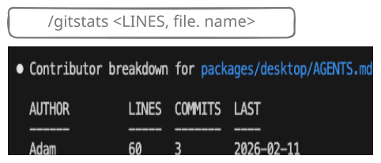

TL;DR - Run /setup to bootstrap. Structure: AGENTS.md (index) + AGENTS/{topic}.md + CLAUDE.md → all pointing to AGENTS.md. Add myprompts/ and myreports/ each with .gitignore * for local scratch work.
Watch video
3. Opinionated setup
I want a setup that is A) agent framework agnostic and B) flexible enough for most projects.
Analogy - Project setup
User skills (from Post 2) are like a toolbelt - the same tools you always carry with you, whatever the job.
A project is like a workbench - everything you need to do this specific job should be there, plus space underneath for the messy middle steps (drafts, notes, scratch output).
Shelves on the wall are like organisation-wide knowledge - documentation, shared standards. In agent terms these are best integrated as MCP servers, but that's out of scope here. This post focuses on the project level.
Project setup: AGENTS.md, /setup, and /learn

Everything points at AGENTS.md, which is read on every agent startup. Keep it short - use it as an index that references larger files in the AGENTS/ folder so the agent only loads what it needs.
AGENTS.md - main index, read at startup by every agent. Short by design.
AGENTS/{topic}.md - deeper context per topic. Agents read only the relevant parts.
CLAUDE.md and opencode.json both point to AGENTS.md - one source of truth regardless of which agent you use.
myprompts/ and myreports/ each have a .gitignore * - they're for messy middle-step work that stays local. Important conclusions get distilled into real artifacts: code, AGENTS/ files, README.md, changelogs.
/setup [path] - Bootstrap agent config
Creates AGENTS.md, CLAUDE.md, the AGENTS/ folder, and private scratch dirs. Idempotent - safe to run on an existing project.
/learn - Populate AGENTS.md from context
After a session where you've solved something worth remembering, /learn extracts the key facts from the conversation and writes them into AGENTS.md or the right file in AGENTS/. Keeps the knowledge base growing without manual maintenance.
Report skills: /codereview, /cleanup, /secure

All three skills follow the same pattern: analyse, then write a report to myreports/. You decide what to act on.
/codereview <branch> - Review a branch
Fetches the diff between a branch and main, writes a terse major/minor/nit review to myreports/. Good before opening a PR. Falls back to a local compare if the remote isn't available.
/cleanup [path] - Find dead code
Scans a path for dead code, unused tests, redundant logic, and outdated docs. Writes a report to myreports/. Does not apply the changes - that's your call.
/secure [path] - Security audit
Runs OWASP Top 10 checks, secrets scanning, and dependency CVE checks. Writes a severity-ranked report to myreports/. A useful quick pass for hobby projects - real projects should wire this into CI/CD instead.
/gitstats - See who touched what

Shows contributor stats for a file or the whole project. Useful for figuring out who to ask about a piece of code, or for checking when something was last meaningfully changed.